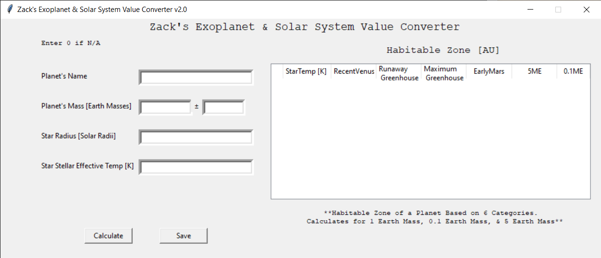
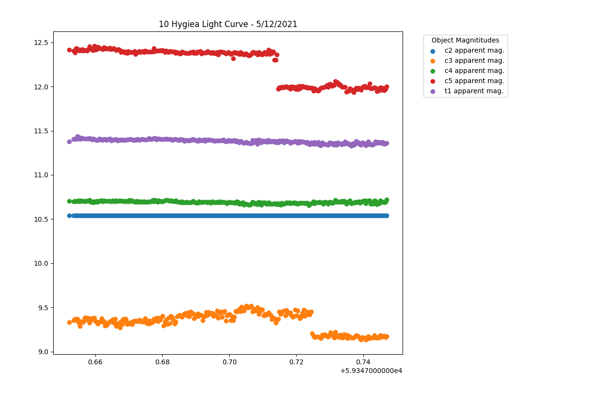

Research & Projects
Here I've highlighted my six favorite research/projects that I've worked on or am currently working on. Below that is a table archive of every project I've worked on so far.
Miniature Multi-Sensor
Array
For the better part of the year, my task at HARBOR was getting the software of the mini-MSA version 2 working.
I started just by reading UART data from the sensors and then needed to find a way to communicate effectively with the MSA.
So, I altered the Raspberry Pi to host a WiFi access point that could be connected to remotely to control the MSA...
Click here to learn more.
Planetary Rocket Launch Simulation
During my Spring 2021 semester at Weber State, I took PHYS 2300 - Scientific Computing, a course that I can only describe as programming basic physics simulations in Python.
For our final project in that class, we were tasked with creating a physics simulation of our own creation. Naturally, being the nerd I am, I decided to program the physics
of a rocket launch simulation when launching from different planetary bodies...
Click here to learn more.
Planetary Value Converter
Software

While working on my exoplanet research, I found that the simulation software I was using required specific units and values to be used for variables. To do it all by hand would
have been especially tedious, so I created some software that will take all of the information entered and output new numbers doing that calculations and in the correct units...
Click here to learn more.
Habitable Exoplanet Summer Research
Funded by the Jim S. Bateman undergraduate research award grant, I have been doing simulations and research on potentially habitable exoplanets from NASA's exoplanet database. Through
this process, I have written a number of scripts to help me, including my featured planetary value converter software. I'm currently in the process of still conducting my research,
but I hope to have a paper of my research published by the end of the summer...
Click here to learn more.
Hypothetical Lunar Water Recovery MCP

From January 2020 to May 2020, I participated in a remote internship hosted by NASA and Arizona State University. We were broken into teams of 12 and told to come up with a Mission
Concept Proposal for a hypothetical lunar landing mission, looking for water on the Moon. We had to come up with every detail from the design of our rover/probe and what instruments
it would carry...
Click here to learn more.
Asteroid & Star Light Curve
Data Processing Software

For my job as a telescope operator, I'm often dealing with large amounts of data, usually in the form of an overbearing excel spreadsheet. Hating the amount of time It takes to
do stuff in Microsoft Excel, I decided to write a python script that will take the data excel file outputted by the AstroImageJ photometry and run it through and produce a nice looking
graph according to your specifications...
Click here to learn more.